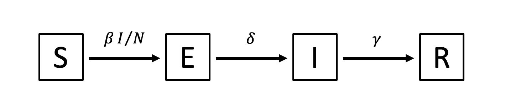

# Individual-based SARS-CoV-2 transmission model, practical 1
library(ggplot2)
## Model parameters
beta <- 0.5 # Transmission parameter
delta <- 1 / 2.5 # Rate of transitioning out of latent state
gamma <- 1 / 5 # Rate of transitioning out of infectious state
omega <- 1 / 180 # Rate of waning immunity
dt <- 1 # Time step of simulation (1 day)
days <- 365 # Duration of simulation (365 days)
steps <- days / dt # Total number of time steps
n <- 1000 # Population size08. Stochastic individual-based models
In this practical, we will implement a stochastic individual-based model of SARS-CoV-2 transmission.
Practical 1. An individual-based SEIR model of SARS-CoV-2 transmission
In the first practical for this session, we’ll code a stochastic individual-based SEIR model with the following model diagram:

Here, the force of infection is \(\lambda = \beta I/N\), the latent period duration is \(1/\delta\), the infectious period is \(1/\gamma\) and the waning rate is \(\omega\). (Symbol names: \(\beta\) = beta, \(\delta\) = delta, \(\gamma\) = gamma, \(\lambda\) = lambda, \(\omega\) = omega.)
The rest of this section goes through each part of the script, with questions to check your understanding. Remember, you can consult the practical solutions if you are stuck.
- What is the unit of time (seconds, days, weeks?) for this model? What have we used as the average duration of the latent period, the average duration of the infectious period, and the average duration of immunity?
## Data frame to store simulation results
results <- data.frame(ts = 1:steps, S = 0, E = 0, I = 0, R = 0)We will use this data frame to track the dynamics of the system over time, including the number of people in state S, E, I, and R for each time step. After you run this line, inspect the data frame (type “results” at the prompt) to make sure you understand its structure.
## Initialize simulation
# Set the seed for the pseudorandom number generator, for reproducibility
set.seed(12345)
# Since this is an individual-based model, we track the properties of all n
# individuals in the simulation. One kind of property we can track is a state,
# such as S (susceptible), E (exposed), I (infectious), or R (recovered). We
# will store each individual's state as a string, either "S", "E", "I", or "R".
state <- rep("S", n) # Each individual's state: start with all susceptible
state[1:10] <- "E" # Start 10 individuals in the "exposed" stateThis section begins with a call to set.seed, which should be familiar from previous practicals, to ensure we can reproduce the same sequence of random numbers for our simulation. Then the state vector is initialized.
- What is in the
statevector at the end of this section? Why have we set some individuals to state “E”?
## Run simulation
# We'll use the built-in function txtProgressBar to track the simulation's
# progress. Really helps for planning coffee breaks! It needs to know the
# minimum and maximum values to expect, and style = 3 tells it to report the
# percentage complete.
bar <- txtProgressBar(min = 1, max = steps, style = 3)
# Loop over each time step . . .
for (ts in 1:steps) {
# Calculate the force of infection
lambda <- beta * sum(state == "I") / n
# Loop through each individual . . .
for (i in 1:n) {
if (state[i] == "S") {
# Transition S -> E (infection) at rate lambda
if (runif(1) < 1 - exp(-lambda * dt)) {
state[i] <- "E"
}
} else if (state[i] == "E") {
#### Fill in the rest: Transition E -> I (latent to infectious) at
#### rate delta, transition I -> R (infectious to recovered) at rate
#### gamma, and transition R -> S (waning of immunity) at rate omega
...
} else if (...) {
...
}
}
# Save population state for this time step
results[ts, "S"] <- sum(state == "S")
##### Fill in the rest for states E, I, and R
results[ts, "E"] <- ...
...
# Update progress bar; close progress bar if we are finished
setTxtProgressBar(bar, ts)
if (ts == steps) {
close(bar)
}
}This section starts by setting up a progress bar using txtProgressBar. The details of how this works are not critical, but you should see the progress bar displayed in the R console when you run the main for loop for the simulation.
Then the simulation’s main for loop happens. The contents of this for loop happen once for every value of ts in 1, 2, 3, …, steps. There are four parts of the for loop.
The first part calculates the force of infection, lambda.
- Part of this calculation for
lambdaincludes the expressionsum(state == "I"). What does this expression do?
The second part loops through each individual i and executes their state transitions. The S \(\rightarrow\) E transition has been filled in for you, but you will need to fill in the E \(\rightarrow\) I, I \(\rightarrow\) R, and R \(\rightarrow\) S transitions yourself.
- What does the expression
runif(1) < 1 - exp(-lambda * dt)do?
The third part saves the current state of the population (number of individuals in the S, E, I, and R states) into the results data frame. S has been completed, but you will need to fill in the details for E, I, and R.
Finally, the fourth part of the for loop updates the progress bar.
## Plot simulation results
ggplot(results) +
geom_line(aes(x = ts, y = S, colour = "S")) +
geom_line(aes(x = ts, y = E, colour = "E")) +
geom_line(aes(x = ts, y = I, colour = "I")) +
geom_line(aes(x = ts, y = R, colour = "R"))The final section of the script plots what is in the results data frame using ggplot.
What does the plot show? How many epidemics are there over the time period simulated?
If you re-run all the code from the line
## Initialize simulationdown to the end of the file, the simulation will run again and, since the same value is used forset.seed, you should see the same results. But different seeds can produce different results. What happens if you useset.seed(123456)instead of12345? Try a few other values inset.seedto explore the randomness exhibited by the model.
Practical 2. Adding more complex dynamics to the model
Start practical 2 with this code. This is the working SEIR model from Practical 1, with a few changes as detailed below.
## Model parametersThere is now an additional parameter in this section,
iota, representing a low rate of “importation” of infections into the population of \(1 \times 10^{-5}\) infections per person per day. This value now gets added to the force of infection,lambda, in the main loop. This represents the reality that few populations of people are truly “cut off” from the rest of the world, so there is usually some risk of importing infection from outside the population of interest. It also avoids stochastic extinction (i.e. when transmission ceases because of low numbers of infected people in a stochastic model).The duration of the simulation,
days, is now 2 years instead of 1 year.
## Some helper functions- This new section contains 5 new functions which will be used during this practical.
infectiousnessandsusceptibilitydo calculations on their parameters, whilelatent_delay,infectious_delay, andab_incrementgenerate random numbers for the simulation to use. The purpose of these functions should become clear as you work on the practical.
The rest of the script is the same as before (except where iota is added to the force of infection, lambda, in the loop). If you run the rest of the file, you should see the same simulation as before, though this time the simulation runs for two years instead of one year.
Now we will try adding more complex dynamics to the simulation, step by step.
If at any point during your testing, the simulation is taking too long to run, you can try reducing the population size n (though this will increase the randomness of the results), increasing the time step dt (though this will reduce accuracy of the simulation), or decreasing the duration of the simulation days.
I. Age
To add age to the model, first we need to add the line
age <- runif(n, 0, 80)to the code, in the # Initialize state variables section. (Recall that the runif function generates random numbers from the uniform distribution.)
- Inspect the results of this call to
runif.What does this line of code do?
Adding an age for each individual doesn’t do anything on its own, but we can make it have an impact on other aspects of the simulation. The helper function infectiousness returns a positive number depending on the values of state and age passed into the function.
Try running this function from the command prompt with a few example values, such as:
infectiousness("S", 12) infectiousness("I", 12) infectiousness(c("I", "I", "E"), c(30, 75, 50))What is this function doing?
Go to the lines at the top of the main
forloop:
# Calculate the force of infection lambda <- beta * sum(state == "I") / n + iotaThe expression
state == "I"effectively gives an infectiousness of 1 (the numerical equivalent ofTRUE) for any individual with state “I”, and an infectiousness of 0 (the numerical equivalent ofFALSE) for any individual of any other state. How would you alter this line to use theinfectiousnessfunction instead of the expressionstate == "I"? Make that change and see how it affects the simulation.(optional) Add aging to the model, by adding a line to the section in the main
forloop headed# Update individual i's non-state variables. Does aging have an impact on dynamics over this time scale?
II. Delay distributions
The helper functions latent_delay(n) and infectious_delay(n) have been set up to generate n random durations (in days) for the latent period and infectious period, respectively. Try running these a few times from the prompt. We will use these to implement these specific delay distributions in the model, instead of the exponentially-distributed delays that the model currently uses.
First we need to add the line
delay <- rep(0, n)to the # Initialize state variables section.
Then, you will need to add some code to the # Update individual i's non-state variables section of the main for loop to decrease each individual i’s delay by dt each time step, which is what counts down the time remaining in the E and I states.
Now we need to modify how the transitions themselves work. For the latent period, first focus on the part of the main loop headed by # Transition S -> E (infection) at rate lambda. Here, we first check if individual i has been infected, and if they have, we currently set their state to Exposed with state[i] <- "E".
You will need to add a line here which also sets their delay to a random number returned by latent_delay(1), which draws one random number from the latent-period duration distribution. Note that inside this function, we draw a random number from a log-normal distribution with parameters meanlog = 0.5 and sdlog = 0.6. You could obtain values such as these from the literature or by trying to measure the distributions from empirical data.
Next, in the part of the main loop headed by # Transition E -> I (latent to infectious) at rate delta, change the if statement so that it checks whether delay[i] is less than zero. Run your code to check whether that has worked.
For the infectious period, follow similar steps. You can reuse the same variable delay for the infectious period, or use a different variable.
Note that you can now remove the model parameters delta and gamma from your code, since they are no longer being used, and update the comments in the main loop accordingly.
III. Modelling neutralizing antibody levels for each individual
Currently, the simulation models immunity as an “on/off” state: either the individual is susceptible to infection (state S) or they are completely immune to infection (state R). As an alternative, we could give each individual an “antibody level” which increases every time they fight off an infection, wanes over time, and whose value determines how likely they are to get reinfected.
We’ll do this in two steps.
Step 1. First, we’ll add the antibody dynamics without affecting the rest of the simulation. Add a new parameter
wane <- 0.05 # Rate of antibody waningto the ## Model parameters section, and a new variable
antib <- rep(0, n) # Antibody concentration for each individualto the # Initialize state variables section. We want each individual’s antib[i] to gradually wane over time, so add the line
antib[i] <- antib[i] - wane * dt # Antibody waningto the section where individual i’s non-state variables are updated. We also want each individual’s antib[i] to jump up every time they recover from an infection, so add the line
antib[i] <- antib[i] + ab_increment(1)to the transition from I to R. The ab_increment(1) function gives a random increase to an individual’s antibodies when they fight off an infection.
Finally, we will want to plot mean antibody levels over time to see this in action. First, add an extra column AMean to the results data frame:
## Data frame to store simulation results
results <- data.frame(ts = 1:steps, S = 0, E = 0,
I = 0, R = 0, AMean = 0)And add some code to the part of the main loop where the population state is saved:
results[ts, "AMean"] <- mean(antib)Now run the simulation. We can generate an extra plot at the end of the simulation to see what is happening to antibody levels over time:
ggplot(results) +
geom_line(aes(x = ts, y = AMean)) +
labs(x = "Time step", y = "Mean antibody level")- What do you observe?
Step 2. Now, we are going to make each individual’s antibody level actually do the work of determining whether they are susceptible to infection.
The function susceptibility(antib) has been set up to give the susceptibility of an individual with antibody level antib, where their susceptibility is defined as the probability that they get infected given an exposure to the virus. Try a few values of antib at the command prompt:
susceptibility(0)
susceptibility(4)
susceptibility(8)Now, alter the code that determines whether an individual goes from Susceptible to Exposed by adding a check for how susceptible to infection they are:
# Transition S -> E (infection) at rate lambda
if (runif(1) < 1 - exp(-lambda * dt) & runif(1) < susceptibility(antib[i])) {
# . . .This new addition is what is going to determine whether an individual is immune or susceptible to infection, so we don’t want to use the R (recovered) state to represent immunity anymore. Instead, we are going to have individuals go straight back to the S (susceptible) state when the infectious period ends. Make this change and remove the R state from the code completely. Now run the simulation.
- Summarize the changes you have made to the simulation and the impact on the simulation results.
IV. Vaccination
As an optional exercise, try adding vaccination to the code. Assume that at time step 300, all individuals who are aged 40 and above get vaccinated, which increases their antibody levels by twice as much as natural infection (so you could add 2 * ab_increment(1) to each individual’s antibody levels).
- What is the impact on the simulation results?
As a further optional exercise, try adding a variable vacc for each individual which is FALSE for anyone who has not been vaccinated and TRUE for anyone who has been vaccinated. Add two extra columns to the results data frame, AMeanU and AMeanV, and use these to keep track of mean antibody levels in ever-vaccinated versus never-vaccinated individuals.
- Plot these observations after running the simulation. You could use code similar to the below. What do you observe?
ggplot(results) +
geom_line(aes(x = ts, y = AMeanU, colour = "Unvaccinated")) +
geom_line(aes(x = ts, y = AMeanV, colour = "Vaccinated")) +
labs(x = "Time step", y = "Mean antibody level")Practical 3. Optimizing the model to run faster
In R, code that loops over each individual in an individual-based model can be quite slow to run. This code can be optimized significantly by vectorizing it—that is, by applying events “all at once” to the entire vector of individuals’ properties rather than one by one, to each individual in turn.
Compare this code:
for (i in 1:n) {
if (state[i] == "S") {
if (runif(1) < 1 - exp(-lambda * dt)) {
state[i] <- "E"
}
}
}With this code:
trE <- (state == "S") & (runif(n) < 1 - exp(-lambda * dt))
state[trE] <- "E"While the first code snippet loops through each individual in turn and applies the S \(\rightarrow\) E transition separately to each individual, the second code snippet has the same effect, but achieves this effect without a for loop.
Breaking down that second code snippet, first it creates a Boolean (TRUE/FALSE) vector trE (“transition to E”) which is the same length as the number of individuals being simulated. This vector has the value TRUE for all individuals who are currently in state “S” and who are calculated to be exposed to the virus, and FALSE for all other individuals. Notice that instead of runif(1), which returns a single random number, we are now using runif(n), which returns n random uniform numbers between 0 and 1.
The second line of the code snippet makes the S \(\rightarrow\) E transition happen, by setting the state of all selected individuals from the previous line to “E”.
This code gives a general outline for vectorizing the simulation from Practical 2. Once vectorized, the simulation runs about 10x faster.
Fundamentally, R as a language is not designed for speed. Reimplementing the model in e.g. C++ using Rcpp would likely increase the speed of the code by another 10-20x.
Solutions to this practical can be accessed here.